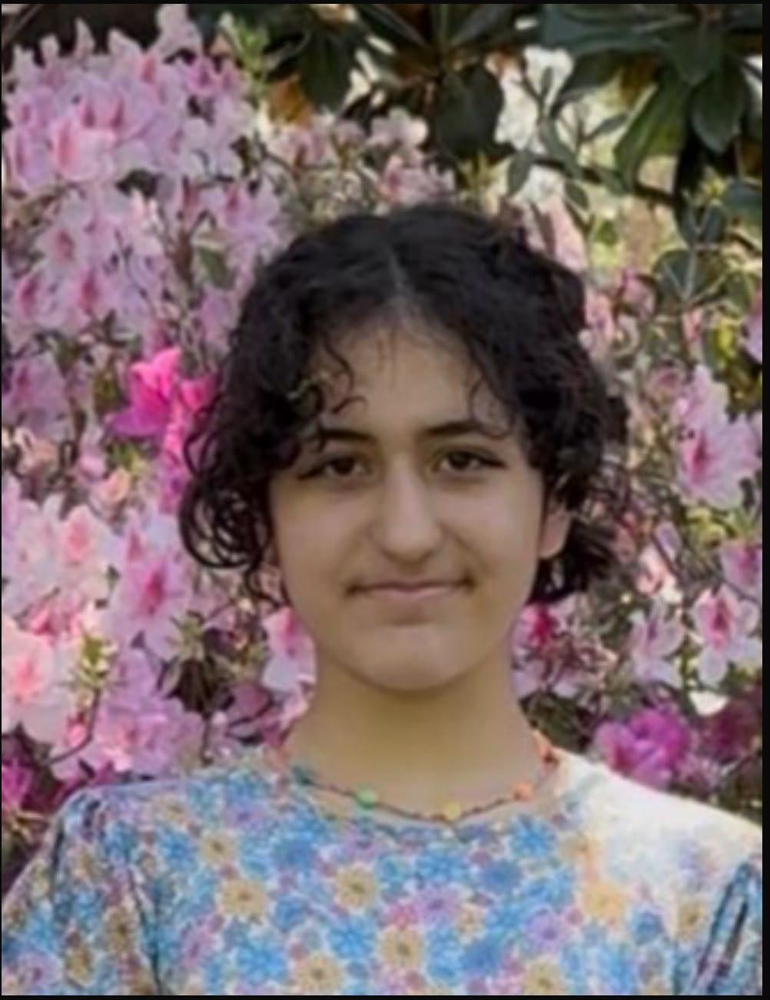

Ayşe is the reason the Knights look and feel the way they do — she handles the creative details, comes up with the ideas, and gives the feedback that keeps every character on-brand. She already codes in Python and Lua, and built a Roblox game that placed second in a game design competition.
She leads her school's coding club, and regularly presents Digital Safety Knights sessions directly to student groups.
Read her full story →
Osman is a Site Reliability Engineer and Cloud/DevOps Engineer with over a decade of hands-on experience keeping production systems reliable, secure, and online — AWS and Kubernetes certified, fluent across cloud infrastructure, CI/CD, and observability.
He built Digital Safety Knights the same way he'd secure any critical system: assume the threat is real, plan for it anyway, and make sure the safety net is actually free for the families who need it.
Read his full story →Owns inbound school, nonprofit, and organization requests end-to-end.
- Field and respond to inbound session requests from schools, nonprofits, and community groups
- Coordinate scheduling, logistics, and format (in-person, virtual, or materials-only)
- Tailor session content to each audience's age group and needs
Owns the Monthly Journal, guides, and the research pipeline behind every claim the site makes.
- Research and write the Monthly Journal and legislative tracker updates
- Maintain and expand our library of parent and educator guides
- Fact-check and source every statistic the site publishes
Runs Discord, social channels, and member communications — the day-to-day voice of DSK.
- Moderate and grow our Discord community
- Manage social media presence and posting cadence
- Handle day-to-day member email communications
Recruits and supports the teen ambassador program and future volunteers.
- Review and onboard Knight Council teen applicants
- Organize volunteer opportunities and recognition
- Build the pipeline for future team growth